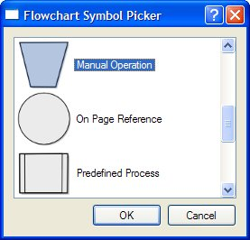
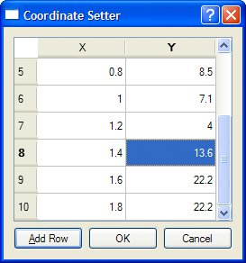
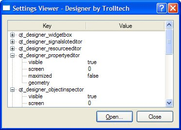

Using the Item View Convenience ClassesUsing Qt's item view convenience subclasses is usually simpler than defining a custom model and is appropriate when we don't need the benefits of separating the model and the view. We used this technique in Chapter 4 when we subclassed QTableWidget and QTableWidgetItem to implement spreadsheet functionality. In this section, we will show how to use the convenience item view subclasses to display items. The first example shows a read-only QListWidget, the second example shows an editable QTableWidget, and the third example shows a read-only QtreeWidget. We begin with a simple dialog that lets the user pick a flowchart symbol from a list. Each item consists of an icon, a text, and a unique ID. Figure 10.3. The Flowchart Symbol Picker application Let's start with an extract from the dialog's header file:
class FlowChartSymbolPicker : public QDialog
{
Q_OBJECT
public:
FlowChartSymbolPicker(const QMap<int, QString> &symbolMap,
QWidget *parent = 0);
int selectedId() const { return id; }
void done(int result);
...
};
When we construct the dialog, we must pass it a QMap<int, QString>, and after it has executed we can retrieve the chosen ID (or -1 if the user didn't select any item) by calling selectedId().
FlowChartSymbolPicker::FlowChartSymbolPicker(
const QMap<int, QString> &symbolMap, QWidget *parent)
: QDialog(parent)
{
id = -1;
listWidget = new QListWidget;
listWidget->setIconSize(QSize(60, 60));
QMapIterator<int, QString> i(symbolMap);
while (i.hasNext()) {
i.next();
QListWidgetItem *item = new QListWidgetItem(i.value(),
listWidget);
item->setIcon(iconForSymbol(i.value()));
item->setData(Qt::UserRole, i.key());
}
...
}
We initialize id (the last selected ID) to -1. Next we construct a QListWidget, a convenience item view widget. We iterate over each item in the flowchart symbol map and create a QListWidgetItem to represent each one. The QListWidget-Item constructor takes a QString that represents the text to display, followed by the parent QListWidget. Then we set the item's icon and we call setData() to store our arbitrary ID in the QListWidgetItem. The iconForSymbol() private function returns a QIcon for a given symbol name. QListWidgetItem's have several roles, each of which has an associated QVariant. The most common roles are Qt::DisplayRole, Qt::EditRole, and Qt::IconRole, and for these there are convenience setter and getter functions (setText(), setIcon()), but there are several other roles. We can also define custom roles by specifying a numeric value of Qt::UserRole or higher. In our example, we use Qt::UserRole to store each item's ID. The omitted part of the constructor is concerned with creating the buttons, laying out the widgets, and setting the window's title.
void FlowChartSymbolPicker::done(int result)
{
id = -1;
if (result == QDialog::Accepted) {
QListWidgetItem *item = listWidget->currentItem();
if (item)
id = item->data(Qt::UserRole).toInt();
}
QDialog::done(result);
}
The done() function is reimplemented from QDialog. It is called when the user presses OK or Cancel. If the user clicked OK, we retrieve the relevant item and extract the ID using the data() function. If we were interested in the item's text, we could retrieve it by calling item->data(Qt::DisplayRole).toString() or more conveniently, item->text(). By default, QListWidget is read-only. If we wanted the user to edit the items, we could set the view's edit triggers using QAbstractItemView::setEditTriggers(); for example, a setting of QAbstractItemView::AnyKeyPressed means that the user can begin editing an item just by starting to type. Alternatively, we could provide an Edit button (and perhaps Add and Delete buttons) and connect them to slots so that we could handle the editing operations programmatically. Now that we have seen how to use a convenience item view class for viewing and selecting data, we will look at an example where we can edit data. Again we are using a dialog, this time one that presents a set of (x, y) coordinates that the user can edit. Figure 10.4. The Coordinate Setter application As with the previous example, we will focus on the item view relevant code, starting with the constructor.
CoordinateSetter::CoordinateSetter(QList<QPointF> *coords,
QWidget *parent)
: QDialog(parent)
{
coordinates = coords;
tableWidget = new QTableWidget(0, 2);
tableWidget->setHorizontalHeaderLabels(
QStringList() << tr("X") << tr("Y"));
for (int row = 0; row < coordinates->count(); ++row) {
QPointF point = coordinates->at(row);
addRow();
tableWidget->item(row, 0)->setText(QString::number(point.x()));
tableWidget->item(row, 1)->setText(QString::number(point.y()));
}
...
}
The QTableWidget constructor takes the initial number of table rows and columns to display. Every item in a QTableWidget is represented by a QTableWidgetItem, including horizontal and vertical header items. The setHorizontalHeaderLabels() function sets the text for each horizontal table widget item to the corresponding text in the string list it is passed. By default, QTableWidget provides a vertical header with rows labeled from 1, which is exactly what we want, so we don't need to set the vertical header labels manually. Once we have created and centered the column labels, we iterate through the coordinate data that was passed in. For every (x, y) pair, we create two QTableWidgetItems corresponding to the x and y coordinates. The items are added to the table using QTableWidget::setItem(), which takes a row and a column in addition to the item. By default, QTableWidget allows editing. The user can edit any cell in the table by navigating to it and then either pressing F2 or simply by typing. All changes made by the user in the view will be automatically reflected into the QTableWidgetItems. To prevent editing, we can call setEditTriggers(QAbstractItemView:: NoEditTriggers).
void CoordinateSetter::addRow()
{
int row = tableWidget->rowCount();
tableWidget->insertRow(row);
QTableWidgetItem *item0 = new QTableWidgetItem;
item0->setTextAlignment(Qt::AlignRight | Qt::AlignVCenter);
tableWidget->setItem(row, 0, item0);
QTableWidgetItem *item1 = new QTableWidgetItem;
item1->setTextAlignment(Qt::AlignRight | Qt::AlignVCenter);
tableWidget->setItem(row, 1, item1);
tableWidget->setCurrentItem(item0);
}
The addRow() slot is invoked when the user clicks the Add Row button. We append a new row using insertRow(). If the user attempts to edit a cell in the new row, the QTableWidget will automatically create a new QTableWidgetItem.
void CoordinateSetter::done(int result)
{
if (result == QDialog::Accepted) {
coordinates->clear();
for (int row = 0; row < tableWidget->rowCount(); ++row) {
double x = tableWidget->item(row, 0)->text().toDouble();
double y = tableWidget->item(row, 1)->text().toDouble();
coordinates->append(QPointF(x, y));
}
}
QDialog::done(result);
}
Finally, when the user clicks OK, we clear the coordinates that were passed in to the dialog, and create a new set based on the coordinates in the QTableWidget's items. For our third and final example of Qt's convenience item view widgets, we will look at some snippets from an application that shows Qt application settings using a QTReeWidget. Read-only is the default for QtreeWidget. Figure 10.5. The Settings Viewer application Here's an extract from the constructor:
SettingsViewer::SettingsViewer(QWidget *parent)
: QDialog(parent)
{
organization = "Trolltech";
application = "Designer";
treeWidget = new QTreeWidget;
treeWidget->setColumnCount(2);
treeWidget->setHeaderLabels(
QStringList() << tr("Key") << tr("Value"));
treeWidget->header()->setResizeMode(0, QHeaderView::Stretch);
treeWidget->header()->setResizeMode(1, QHeaderView::Stretch);
...
setWindowTitle(tr("Settings Viewer"));
readSettings();
}
To access an application's settings, a QSettings object must be created with the organization's name and the application's name as parameters. We set default names ("Designer" by "Trolltech") and then construct a new QtreeWidget. At the end, we call the readSettings() function.
void SettingsViewer::readSettings()
{
QSettings settings(organization, application);
treeWidget->clear();
addChildSettings(settings, 0, "");
treeWidget->sortByColumn(0);
treeWidget->setFocus();
setWindowTitle(tr("Settings Viewer - %1 by %2")
.arg(application).arg(organization));
}
Application settings are stored in a hierarchy of keys and values. The addChildSettings() private function takes a settings object, a parent QtreeWidgetItem, and the current "group". A group is the QSettings equivalent of a file system directory. The addChildSettings() function can call itself recursively to traverse an arbitrary tree structure. The initial call from the readSettings() function passes 0 as the parent item to represent the root.
void SettingsViewer::addChildSettings(QSettings &settings,
QTreeWidgetItem *parent, const QString &group)
{
QTreeWidgetItem *item;
settings.beginGroup(group);
foreach (QString key, settings.childKeys()) {
if (parent) {
item = new QTreeWidgetItem(parent);
} else {
item = new QTreeWidgetItem(treeWidget);
}
item->setText(0, key);
item->setText(1, settings.value(key).toString());
}
foreach (QString group, settings.childGroups()) {
if (parent) {
item = new QTreeWidgetItem(parent);
} else {
item = new QTreeWidgetItem(treeWidget);
}
item->setText(0, group);
addChildSettings(settings, item, group);
}
settings.endGroup();
}
The addChildSettings() function is used to create all the QtreeWidgetItems. It iterates over all the keys at the current level in the settings hierarchy and creates one QTableWidgetItem per key. If 0 was passed as the parent item, we create the item as a child of the QtreeWidget itself (making it a top-level item); otherwise, we create the item as a child of parent. The first column is set to the name of the key and the second column to the corresponding value. Next, the function iterates over every group at the current level. For each group, a new QtreeWidgetItem is created with its first column set to the group's name. The function then calls itself recursively with the group item as the parent to populate the QTReeWidget with the group's child items. The item view widgets shown in this section allow us to use a style of programming that is very similar to that used in earlier versions of Qt: reading an entire data set into an item view widget, using item objects to represent data elements, and (if the items are editable) writing back to the data source. In the following sections, we will go beyond this simple approach and take full advantage of Qt's model/view architecture. |